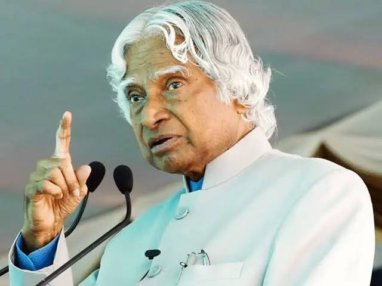

A. P. J Abdul Kalam
1931 - 2015
Missile Man of India
Avul Pakir Jainulabdeen Abdul Kalam was an Indian aerospace scientist and statesman who served as the 11th president of India from 2002 to 2007. was known as the 'Missile Man of India' for his work in the development of ballistic missile technology. From 1992 to 1999, Kalam was the Chief Scientific Adviser to the Prime Minister and the Secretary of the DRDO. Kalam was the Chief Project Coordinator during the Pokhran II tests.
Biography
- Eternal Quest: Life and Times of Dr Kalam by S Chandra; Pentagon Publishers, 2002.
- President A P J Abdul Kalam by R K Pruthi; Anmol Publications, 2002.
- A P J Abdul Kalam: The Visionary of India by K Bhushan, G Katyal; A P H Pub Corp, 2002
- A Little Dream (documentary film) by P. Dhanapal; Minveli Media Works Private Limited, 2008.
- The Kalam Effect: My Years with the President by P M Nair; HarperCollins, 2008.
- My Days With Mahatma Abdul Kalam by Fr A K George; Novel Corporation, 2009.
- A.P.J. Abdul Kalam: A Life by Arun Tiwari; Harper Collins, 2015.
- The People's President: Dr A P J Abdul Kalam by S M Khan; Bloomsbury Publishing, 2016.